今日のワンオラクル
気になる一枚を選んでください。
そのカードが今のあなたへのメッセージです。
カードを引く
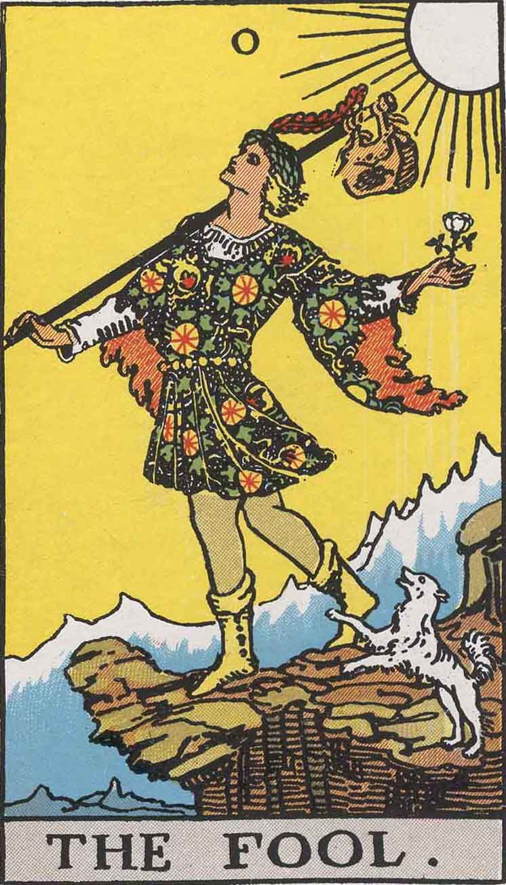
0 – 愚者
自由な始まり、無限の可能性。恐れずに一歩を踏み出して。
カードを引く
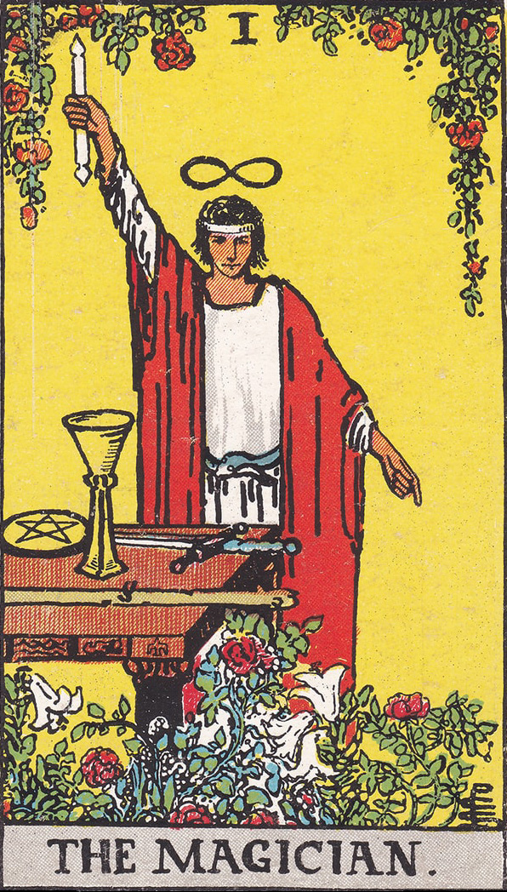
I – 魔術師
意志の力と創造。持てる力を使いこなす時。
カードを引く
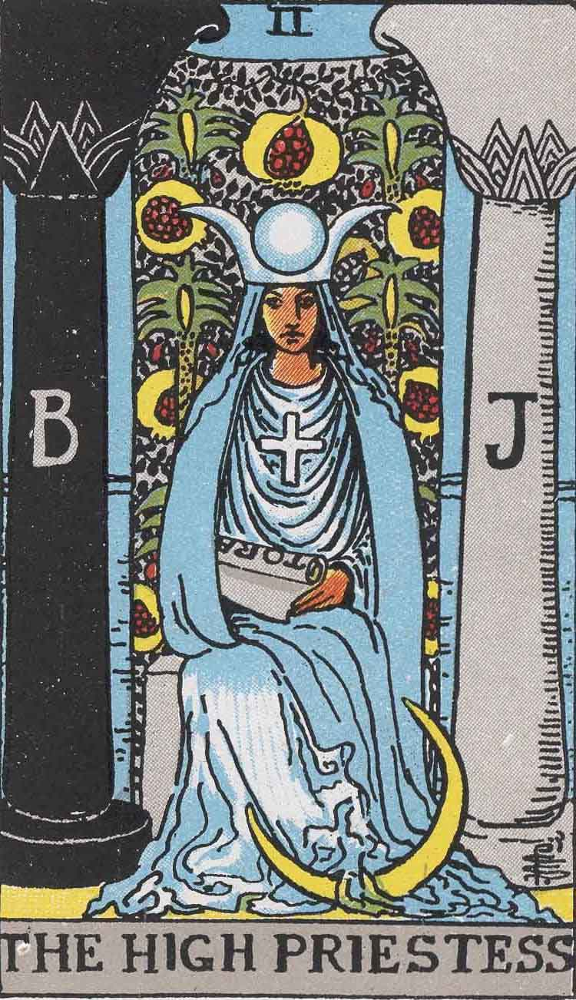
II – 女教皇
直感と内なる知恵。静かに耳を澄ませて。
カードを引く

III – 女帝
豊かさと創造性。自分を慈しむ時間を。
カードを引く
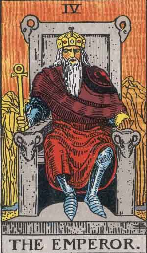
IV – 皇帝
安定と秩序。計画を立て、地に足をつけて。
カードを引く

V – 教皇
伝統と学び。信頼できる助言に耳を傾けて。
カードを引く
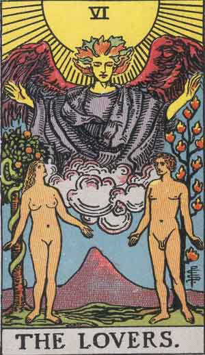
VI – 恋人
選択と調和。心が惹かれる方を選んで。
カードを引く
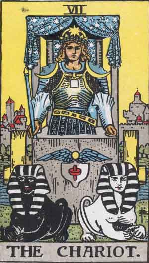
VII – 戦車
前進する意志。迷いを断ち切り進む時。
カードを引く
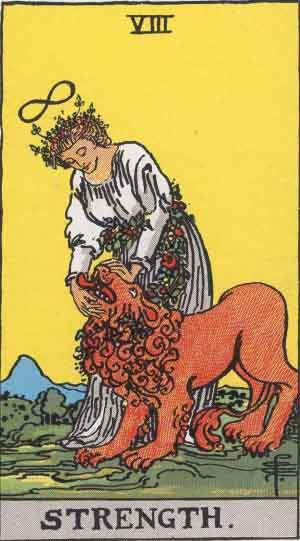
VIII – 力
内なる強さと忍耐。優しさが力になる。
カードを引く
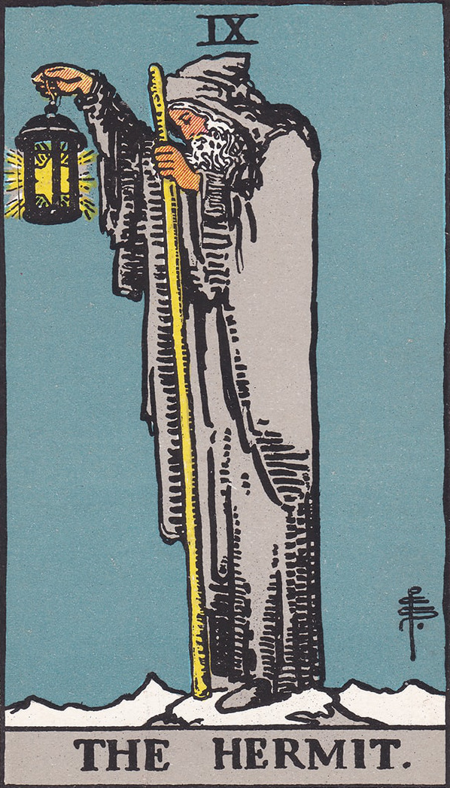
IX – 隠者
内省と探求。一人の時間が答えをくれる。
カードを引く

X – 運命の輪
巡り合わせと転機。流れに身を任せて。
カードを引く
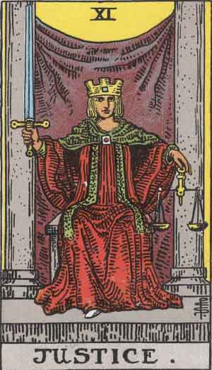
XI – 正義
均衡と公正。誠実な判断が実を結ぶ。
カードを引く

XII – 吊された男
視点の転換。今は待つことも前進のうち。
カードを引く
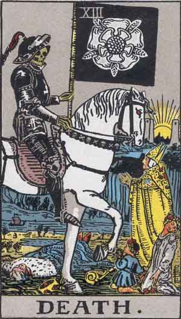
XIII – 死神
終わりと再生。手放すことで道が開く。
カードを引く
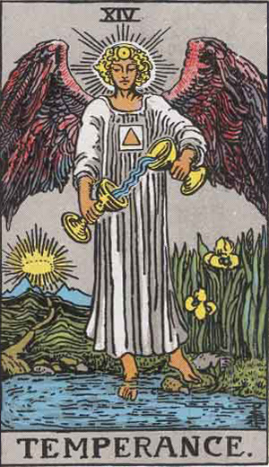
XIV – 節制
調和とバランス。焦らず穏やかに整えて。
カードを引く
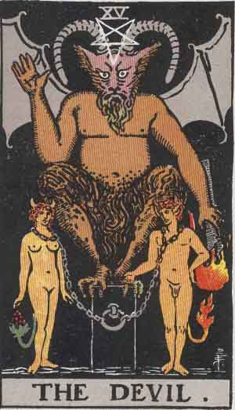
XV – 悪魔
執着と誘惑。縛られているものに気づいて。
カードを引く

XVI – 塔
突然の変化。崩れた先に新しい景色がある。
カードを引く

XVII – 星
希望と癒し。願いは静かに叶っていく。
カードを引く
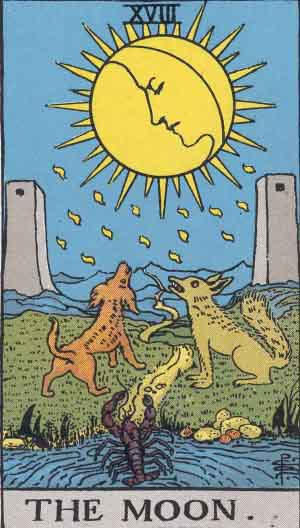
XVIII – 月
不安と幻想。見えないものを恐れすぎないで。
カードを引く
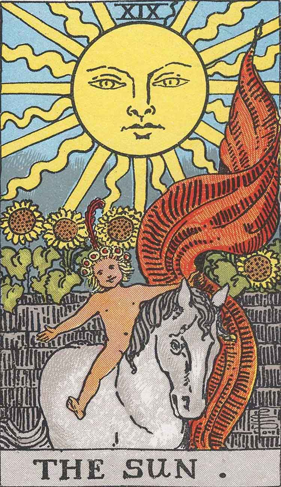
XIX – 太陽
成功と喜び。ありのままの自分で輝いて。
カードを引く

XX – 審判
目覚めと決断。過去を認め、次へ進む時。
カードを引く
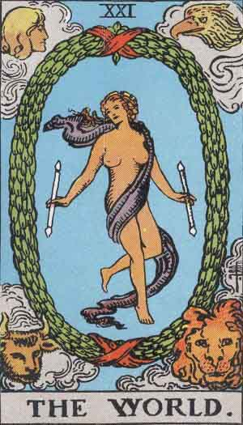
XXI – 世界
完成と統合。一つの旅の終わりを祝って。